A/T Controls - MIL ON/DTC's P0705/P0707/P0706/P0708
GROUPAUTOMATIC TRANSMISSION
NUMBER
12-AT-022-1
DATE
OCTOBER 2012
MODEL
Tucson (LM), Santa Fe (CM),
Sonata (YF), Elantra
(UD/MD/GD/JK), Accent (RB),
Azera (TG/HG), Veloster Turbo
SUBJECT:
AUTOMATIC TRANSAXLE (6-SPEED)
INHIBITOR SWITCH DTC P0705, P0706, P0707 & P0708
This TSB supersedes 12-AT-022 to revise the Parts Information
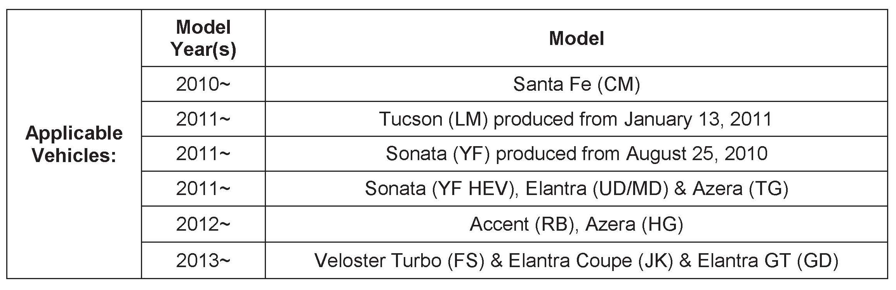
Description:
An improperly adjusted or improperly operating inhibitor switch (range switch) may result in the following conditions:
^ Diagnostic trouble codes:
> P0705 - Range switch sensor circuit
> P0707 - Range switch - open circuit
> P0706 - Range switch range/performance
> P0708 - Range switch - short circuit or multiple inputs
^ Malfunction Indicator Light (MIL) illuminated
^ Impossible engine start in "P" or "N"
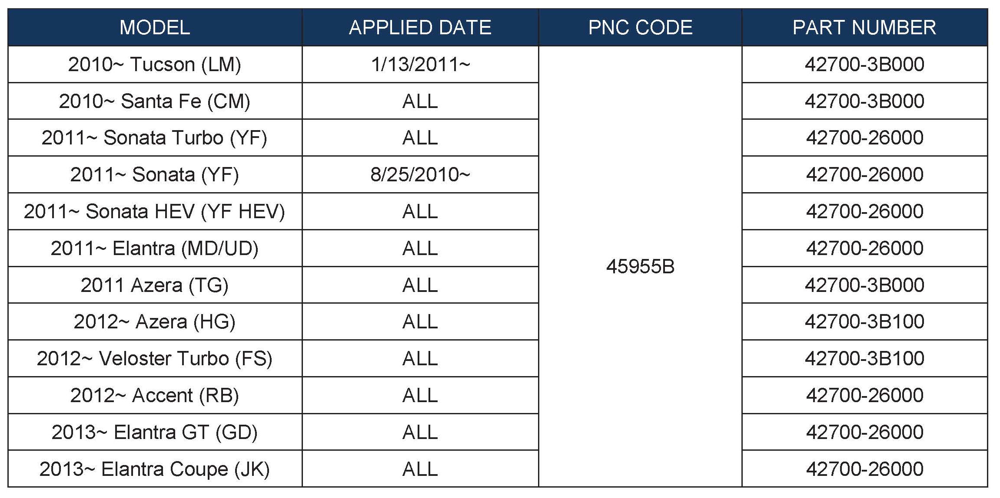
PARTS INFORMATION:
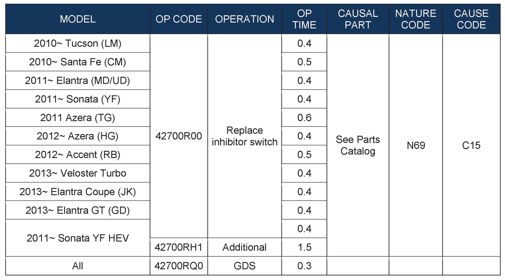
WARRANTY INFORMATION:
SERVICE PROCEDURE:
1. Turn the ignition key to the ON position or push the Start/Stop Button two times.
2. Using a GDS, check for DTC in the "Automatic Transaxle" menu. Record the DTC and description. Delete the DTC.
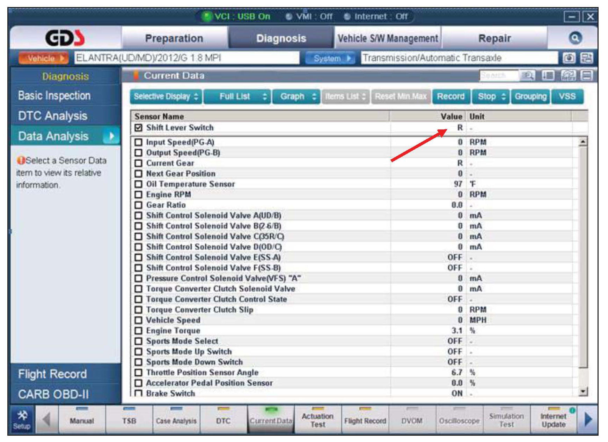
3. Select the following parameters. Move the shift lever through all gears and monitor the sensors.
^ Vehicle and A/T menu.
^ "Current Data"
^ Shift Lever Switch.
4. If the Shift Lever Switch shows:
^ The correct shift lever position, the wiring currently has no open/short circuits. Go to Step 6.
^ Does not show the correct shift lever position, go to Step 5.
5. Visually check the wiring harness between the PCM and inhibitor switch for a damaged wire or open circuit/short circuit to ground. Check for a damaged pin or pin not fully inserted into the
connector.
^ If damage exists, repair or replace the control wiring and drive the vehicle to confirm the repair.
^ If no damage or open/short circuit is found, go to Step 6.
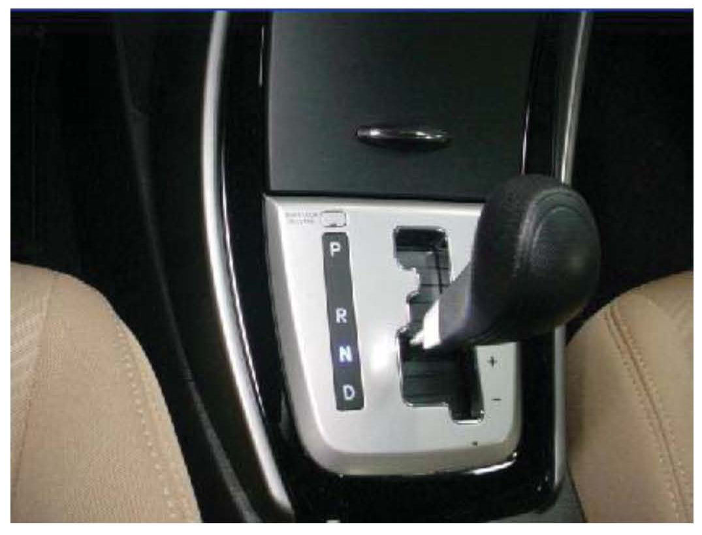
6. Place the shift lever to the "N" position.
Turn the ignition switch to the OFF position.
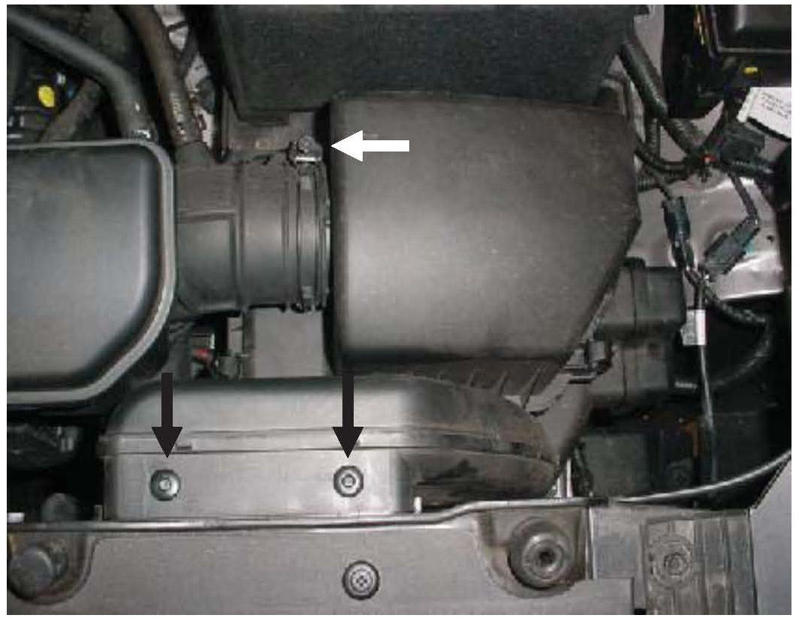
7. Remove the air duct and air cleaner, if needed, to access the inhibitor switch.
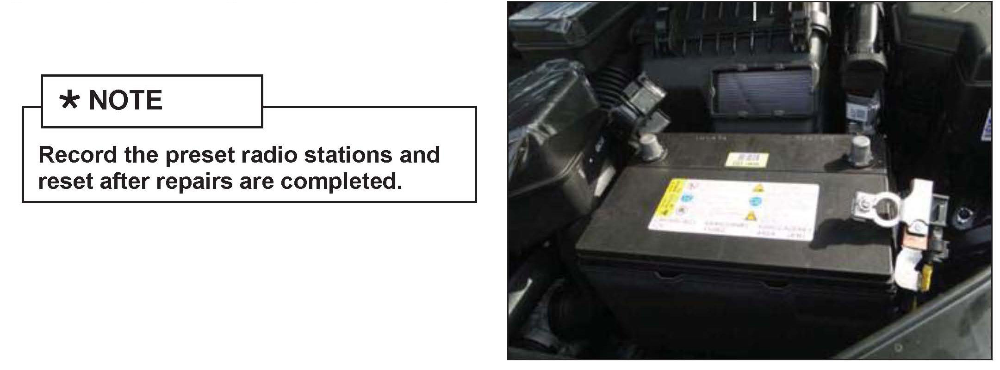
8. Remove the battery, if needed, to access the
inhibitor switch.
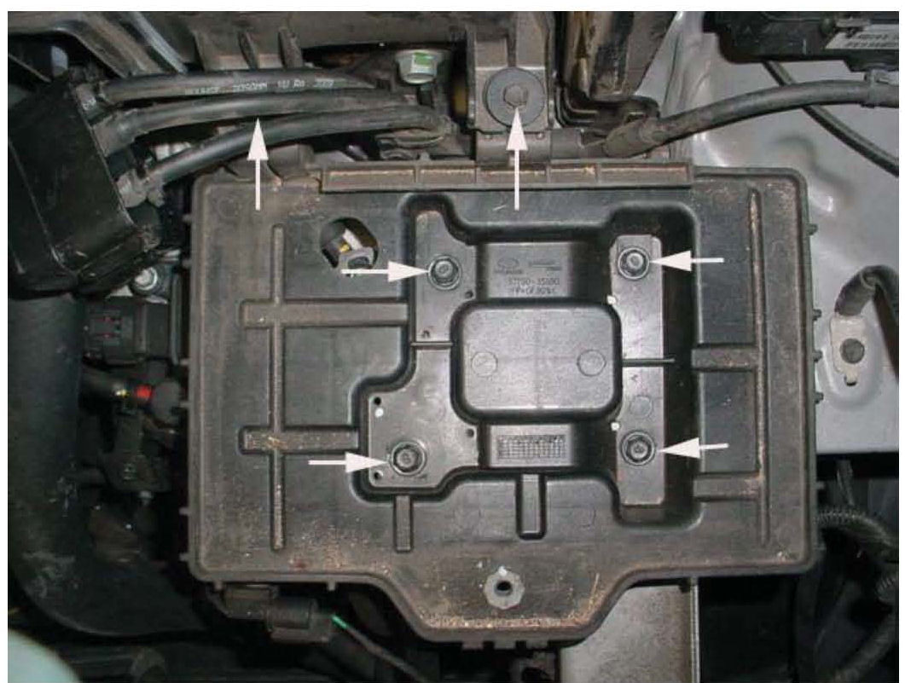
9. If the battery was removed in Step 8:
Remove 2 bolts to the air cleaner.
Remove 4 bolts to the battery tray and remove
the battery tray.
Tightening Torque: 7~9 lb-ft (1.0~1.2kgf.m)
Move the battery tray aside to gain access to
the inhibitor switch.
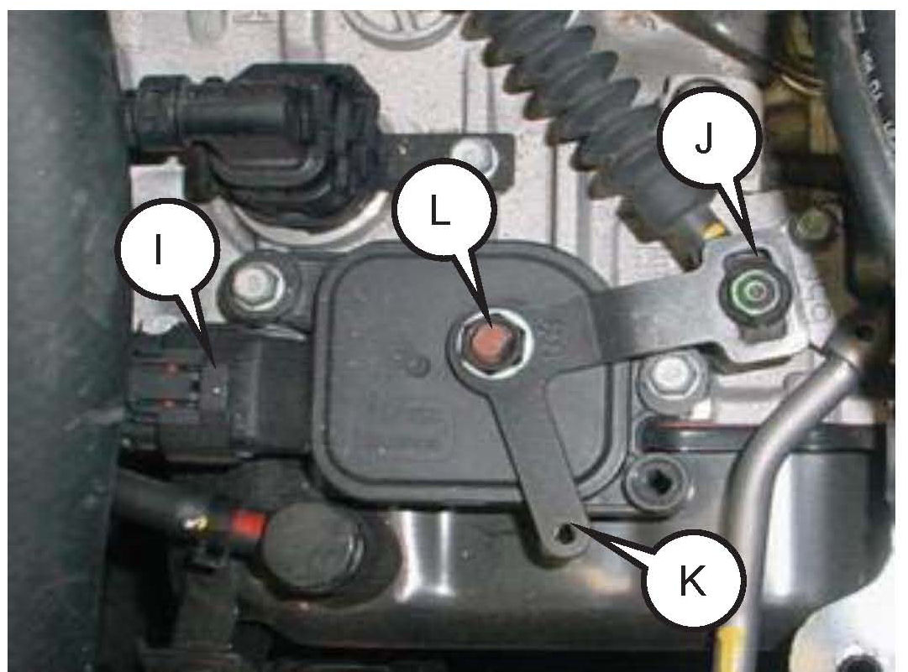
10. Disconnect the inhibitor switch connector (I).
Remove the shift cable mounting nut (J).
Remove the nut (L) and washer and remove the manual control lever (K).
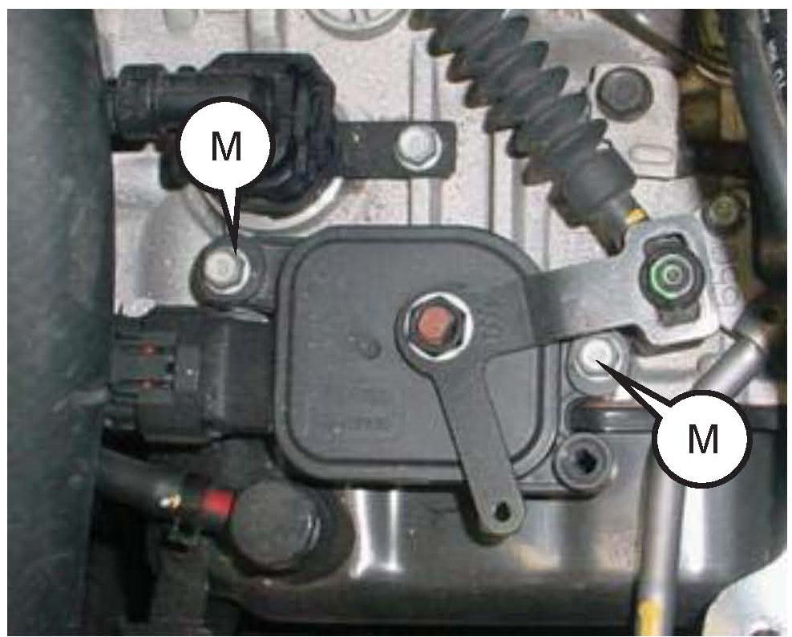
11. Remove 2 mounting bolts (M) and remove the
inhibitor switch assembly.
12. Install the new inhibitor switch assembly to the
transaxle and tighten the mounting bolts.
Torque: 7~9 lb-ft (1.0~1.2kgf.m)
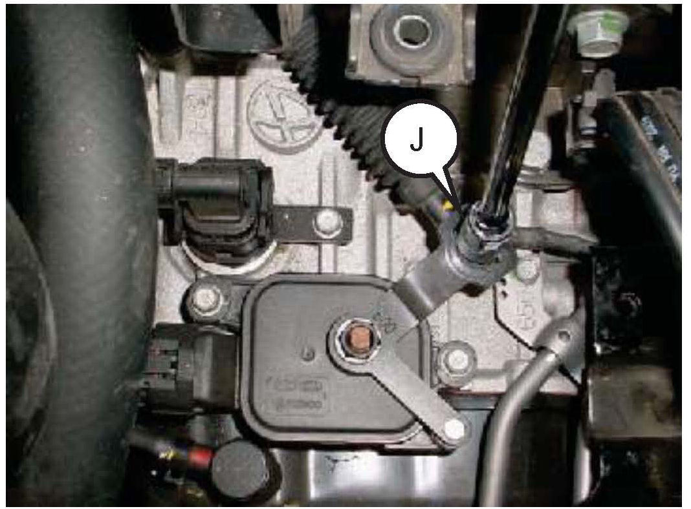
13. Install the shift cable mounting nut (J) and
tighten the mounting nut to specification.
Torque: 6~9 lb-ft (0.8 ~ 1.2 kgf.m)
Remove the bolt or screwdriver from the alignment hole.
14. Re-install all the removed parts in reverse order of removal
*NOTE
Reset the radio stations after repairs are completed.
15. Clear the codes and test drive the vehicle for two drive cycles (two key-on to key-off driving cycles). If the DTC:
^ Do not occur again, return the vehicle to the customer.
^ Occur again, repair or replace the control wiring between the PCM and inhibitor switch.
^ If the DTC occur again, replace the PCM/TCM.